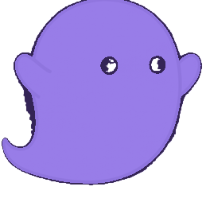
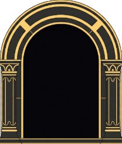
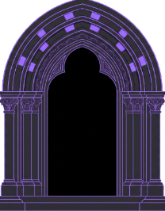

本文参数与约束均按实际代码核对（src/engine.js、src/levels.js）。
关卡设计约束一节的数值不是经验估计，而是由引擎常量反推出来的硬边界——
违反其中任何一条，关卡都会变成不可解或可被硬闯。
01核心机制
全黑场景。两个角色同屏，规则互为镜像：
| 角色 | 生存条件 | 操作 |
|---|---|---|
| 光灵（Lumen） | 必须待在光里，离开光就消散 | ← → 移动，↑ 跳 |
| 影灵（Umbra） | 必须待在暗处，被光照到就消散 | A D 移动，W 跳 |

影灵 UmbradrawPlayer，圆角矩形加渐变与光晕），形象尚未替换为该设定。
灯有两种：固定灯（挂墙上，不可动，实心可站）与可推灯（角色能推着走）。 通关条件是两人同时站在各自的门里。
02规则的对称性
两个角色的规则是严格镜像的：同一套判定，只是符号相反。 这不是为了省事——对称性是这个机制能产生有效谜题的前提。
如果两人的限制不对称（比如一个怕光、另一个怕水），那么改变环境时， 设计者需要分别推演两条独立的因果链；玩家也需要分别记忆两套规则。 而在镜像规则下，玩家只要理解「亮和暗互补」这一件事， 就能自动推演出两边的后果——认知成本减半，谜题深度不变。
这是双角色设计里最容易做错的地方。给两个角色不同的能力看起来内容更丰富， 实际上是把一个谜题拆成两个互不相干的谜题。 真正的合作谜题要求两人被同一个变量以相反方式影响—— 只有这样，玩家的每一次操作才同时是「帮了一个人」和「害了另一个人」。
03判定与渲染分离
这是本作技术实现里最关键、也最容易被忽略的一条： 光的「好看」和光的「致命边界」是两套独立系统。
| 渲染 | 判定 | |
|---|---|---|
| 做法 | 把面向灯的墙面边缘沿光线挤出成阴影多边形，用 destination-out 从光照图挖掉 | 灯到角色的视线检测 + 距离衰减，累加光强 |
| 阈值 | 亮度曲线 | LIT_THRESHOLD = 0.45，对应灯半径的 55% |
| 更新时机 | 仅在灯移动或机关门开合时重算 | 每帧 |
渲染的亮度必须在判定边界之后迅速收掉，否则会出现「看着危险其实安全」的光晕。
这条约束的方向值得注意：不是判定去迁就画面，而是画面必须服从判定。 如果光晕在判定边界之外还留有可见的余辉，玩家会把那圈余辉也当成危险区， 于是绕开本来能走的路——谜题的解空间被视觉误导缩小了， 而玩家永远不会知道是自己读错了，只会觉得这关无解。
灯半径 LAMP_RADIUS = 400，判定发生在 220px 处。
角色进入错误环境后并非立即死亡，而是有 0.28 秒的护盾——这个数字的选取见下一节。
04手感参数
| 常量 | 值 | 作用 |
|---|---|---|
TILE | 32 px | 一格。关卡是字符网格，一个字符 = 一格 |
GRAVITY | 1500 px/s² | 重力 |
MOVE_SPEED | 190 px/s | 水平移速 |
JUMP_VEL | −490 | 起跳初速度，对应最高跳 80px = 2.5 格 |
JUMP_CUT | 0.45 | 松键断跳，短按矮跳 |
COYOTE_TIME | 0.09 s | 离地后仍可起跳 |
JUMP_BUFFER | 0.10 s | 落地前预输入 |
DRAIN_RATE | 1 / 0.28 s | 护盾耗尽时间 |
DEATH_TIME | 0.55 s | 消散动画时长 |
0.28 秒不是随便挑的
角色跳跃穿过一道光柱的暴露时间约 0.34 秒。 护盾设成 0.28 秒，意味着硬闯必死； 一旦放宽到 0.34 秒以上，会跳的玩家就能直接冲过所有光柱， 整个「光是屏障」的设定当场失效，所有关卡同时被破解。
这是一个典型的「单点数值决定全局设计是否成立」的例子。 它不是手感参数，是规则参数——调它不是让游戏变难变易，而是决定游戏还成不成立。 这类参数应当在文档里被单独标出，避免后来者当成体验调优随手改动。
05关卡设计约束
以下数字全部由引擎常量倒推得出。它们不是建议，是硬边界—— 新增关卡时违反任何一条，结果不是「难度不合适」，而是「不可解」或「可被硬闯」。
三个可达性数字，定义了关卡的全部词汇
| 动作 | 可达高度 / 距离 | 换算 | 关卡含义 |
|---|---|---|---|
| 普通跳 | 80 px | 2.5 格 | 2 格台阶跳得上，3 格跳不上 |
| 站在灯上跳 | 110 px | 3.4 格 | 3 格墙必须借灯才能翻 |
| 最大水平跳 | 124 px | 3.9 格 | 缺口最多 3 格 |
这三个数字构成了一套可组合的关卡语法： 「3 格墙」等于「这里必须用灯」，「4 格缺口」等于「这里过不去」。 设计关卡时不需要试玩验证可达性，读格子数就能判断。
其余六条硬约束
- 光柱缝隙要有 3 格宽。护盾 0.28 秒，缝隙过窄则无论如何都撑不过去。
- 靠光斑赶路时，两块光斑之间的黑暗不得超过 53px。 由 0.28 秒护盾 × 190px/s 移速算出。实际留 20% 余量，即 ≤ 44px。
- 影灵走廊至少 4 格高。 只有 3 格时跳跃会撞顶、上升速度归零，滞空从 0.65 秒缩到 0.52 秒， 水平距离只剩 98px——而跨 3 格缝需要 100px。差 2px，关卡直接不可解。
- 固定灯不能放在光柱缝隙的正下方。 对「站立」判定是安全的（缝里本来就站不了人）， 但影灵必须飞越那段空域，会被正射的光柱烤死。
- 固定灯是实心的，不能放在地板行上，否则会堵死通路。
- 门必须放在角色真正站立的那一行（脚下有地），否则判定区够不着； 压力板至少铺 2 格——从高处跳下是抛物线，单格板会被整个越过。
关卡数据是纯字符网格，改关卡不用碰引擎（src/levels.js）。
但「能改」和「改得对」是两回事——没有这张表，任何新增关卡都要靠反复试玩才能确认可解。
把引擎常量翻译成格子数，等于把物理系统编译成了关卡设计者能直接使用的语言。
这是本项目里最有复用价值的一份产出。
06教学曲线
每关只教一件新东西，且新元素首次出现时环境是宽松的。
关卡的设计意图写在数据的 hint 字段里，悬停选关按钮即可看到——
提示不是攻略，是设计者对「这关在问什么」的声明。
| 阶段 | 关卡 | 教的东西 |
|---|---|---|
| 基础词汇 建立「灯 = 路」的心智模型 | 分道 | 两种角色的生存规则 |
| 借光 | 灯可以推，推灯就是在改路 | |
| 互锁 | 压力板 / 机关门，谁先动的顺序 | |
| 垫脚石 | 灯也是能站上去的箱子 | |
| 组合与约束 引入不可逆与配重 | 追光 | 光柱跟着灯扫动，跟在光后面走 |
| 压住 | 常压板：松开就关，得拿灯当配重 | |
| 深井 | 灯掉下去就捞不回来，顺序不可逆 | |
| 双灯 | 两盏灯两个用途，别弄反 | |
| 空间与顺序 多层结构，规划成本上升 | 回环 | 先把灯送过去，再推回来 |
| 三重 | 三层楼，灯掉到底层就上不来 | |
| 四层 | 四层楼，灯要往下丢两次 | |
| 独灯 | 两块常压板一盏灯，一次只能开一扇门 | |
| 综合 前面所有要素的组合考核 | 双灯井 | 两盏灯两个去处 |
| 留守 | 轮流当按门的人 | |
| 天窗 | 光灵没有灯，踩着漏下的光斑走 | |
| 错身 | 两人反向走，光柱一路扫过来 |
「天窗」是整套曲线里的一次反转：此前所有关卡都在教「灯是你的工具」， 这一关却把灯全部封在天花板后面，光灵只剩几块漏下来的光斑可踩。 它考的不是新知识，而是玩家有没有真的理解「光是资源」这件事—— 当资源不可控时，剩下的只有对第 05 节那条「44px 黑暗上限」的直觉。
07灯：一物三用
整个游戏只有一种可交互物件，但它承担三个完全不同的功能：
| 身份 | 作用 | 首次教学 |
|---|---|---|
| 光源 | 开辟光灵的路 / 封死影灵的路 | 「借光」 |
| 箱子 | 站上去多 30px 可达高度，翻 3 格墙 | 「垫脚石」 |
| 配重 | 压住常压板，代替人力持续压住 | 「压住」 |
三个用途互相冲突——灯用来照路就不能同时当配重，用来当台阶就得留在原地。 「只有一盏灯而有两件事要做」因此成为最经济的谜题模板， 「独灯」就是这个模板的纯粹形态：两块常压板、两扇门、一盏灯。
增加物件种类是扩展谜题最直观的方式，也是最贵的方式—— 每种新物件都要新的美术、新的规则、新的教学关。 给同一个物件叠加互斥的用途，成本接近于零，产生的组合空间却是乘法级的。 全作没有出现第二种可推物件，靠的就是这个。
08可逆与不可逆
两种开关，区别只有一条，但改变了整关的思考方式：
| 类型 | 字符 | 行为 | 玩家的思考方式 |
|---|---|---|---|
| 压力板 | 1-4 | 踩一次永久开启对应门 | 「先后顺序」——只需想清楚谁先动 |
| 常压板 | a-d | 压住才开，松开就关（灯可作配重） | 「资源分配」——谁/什么被占用了 |
另一处不可逆来自地形：灯掉进井里就捞不回来（「深井」「三重」「四层」「双灯井」）。 这把「顺序错误」的代价从「多走几步」提升到「本关作废」， 迫使玩家在动手前先在脑子里跑一遍——解谜游戏真正的难度来自规划，不是操作。
两类开关的分工也很清楚：可逆的压力板负责教学（很早就出现，容错高）， 不可逆的常压板与深井负责施压（进入「组合与约束」阶段后才登场）。
09可读性与音效
画面服务于判读
- 墙体按坐标哈希做逐格明暗抖动，并加受光顶面与背光底边——避免大片纯色导致的空间感丢失。
- 门画成暗内腔 + 发光门框。门本质是墙上的洞，内部必须暗，才能在明亮区域里也看得见。
- 机关门用流动的能量条表示「还关着」，与已开启状态在静止画面里也能区分。
- 光照区内飘浮尘埃，让「哪里有光」在没有物体的空中也能被看见；每帧只抽样更新五分之一以控制视线检测开销。

光灵的门
影灵的门音效覆盖率是个真问题
音效事件必须铺满常见操作（开场、落地、推灯、开门、进门、开关反馈）。 原先跳跃是唯一的发声点，而首关根本不需要跳—— 结果玩家可能整整一关听不到任何声音，误以为游戏没有音效。
另一个坑是音频解锁：AudioContext 必须等到首次用户手势才创建。
页面载入时创建会得到一个挂起的上下文，之前排进去的声音全部丢失。
10技术实现
| 项 | 做法 | 理由 |
|---|---|---|
| 依赖 | 原生 HTML/CSS/JS + Canvas，零依赖零构建 | 仓库直接丢到 GitHub Pages 就能跑 |
| 关卡数据 | 字符网格，与引擎完全分离 | 加关卡只改 levels.js，不碰逻辑 |
| 阴影生成 | 墙面边缘沿光线挤出多边形，destination-out 挖除 | 相邻同向墙面先合并成长边，减少多边形数量 |
| 重算时机 | 光照图只在灯移动或机关门开合时重算 | 静止时零开销 |
| 光暗判定 | 与渲染分离，视线检测 + 距离衰减 | 见第 03 节 |
| 音效 | WebAudio 现场合成 | 无素材文件 |
11已知限制与下一步
已知限制
- 需要物理键盘，手机端不支持触屏。双角色同屏各用一组按键，是当前操作方案的直接代价。
- 双人同屏而非联机。一个人用两只手控两个角色，或两人共用一个键盘。
下一步
- 移动端方案。触屏要同时控制两个角色，最可行的路径可能是「轮流控制 + 另一角色自动保持」， 但这会改变谜题的性质——当前很多关的难点正在于「两人必须同时行动」，需要重新评估受影响的关卡。
- 把第 05 节的约束做成校验工具。 现在这些约束靠人记；写一个读取字符网格并检查可达性的脚本， 新增关卡时能自动报出「这里 4 格缝跳不过去」「这块板只有 1 格宽」。
- 验证「天窗」的难度断层。 这一关取消了玩家对光的控制权，是全作认知负荷最大的一关。 需要观察玩家在此处的卡关时长是否显著高于前后关——如果是，考虑在它之前补一个光斑赶路的轻量教学。